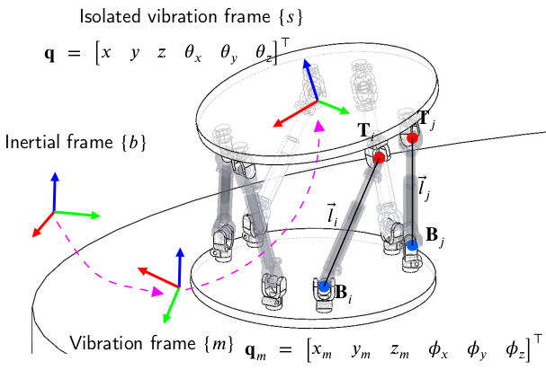
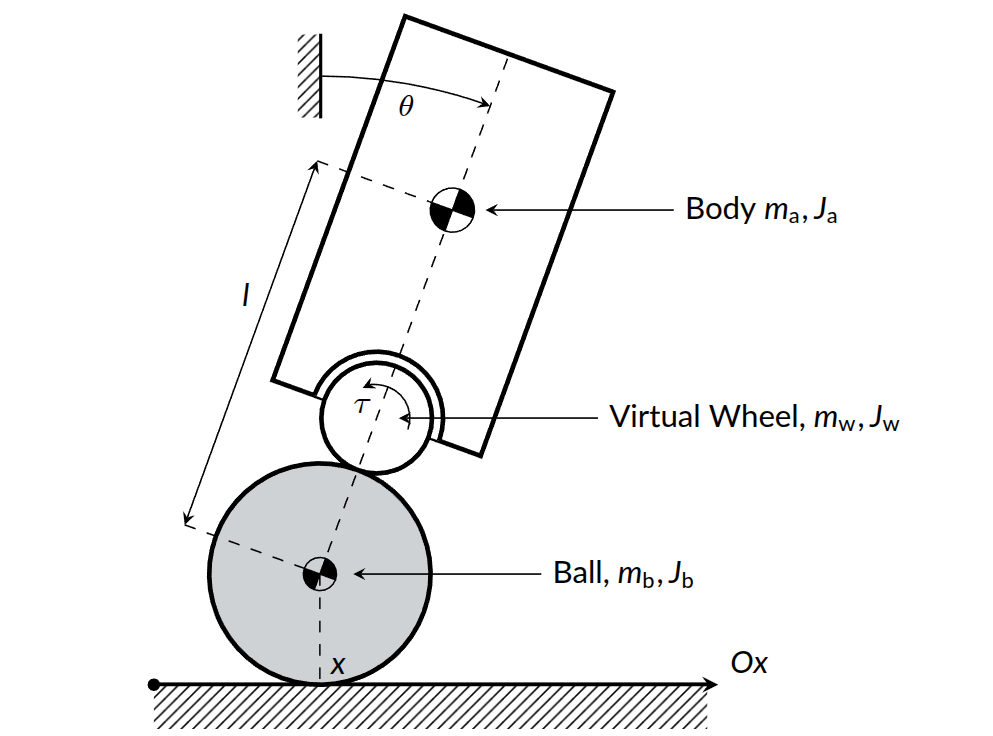
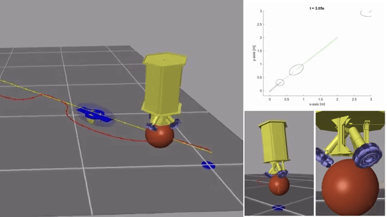
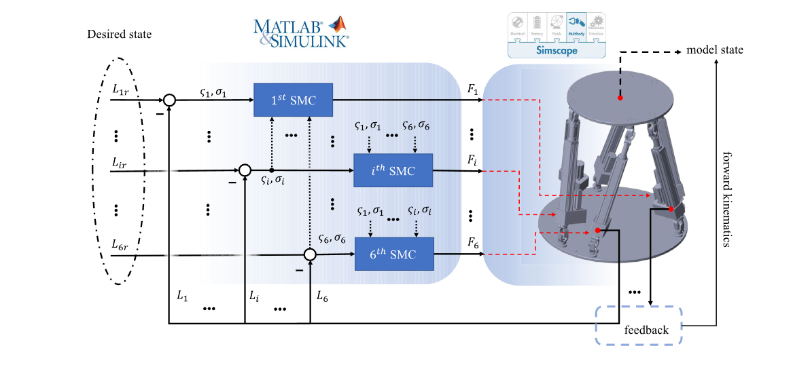
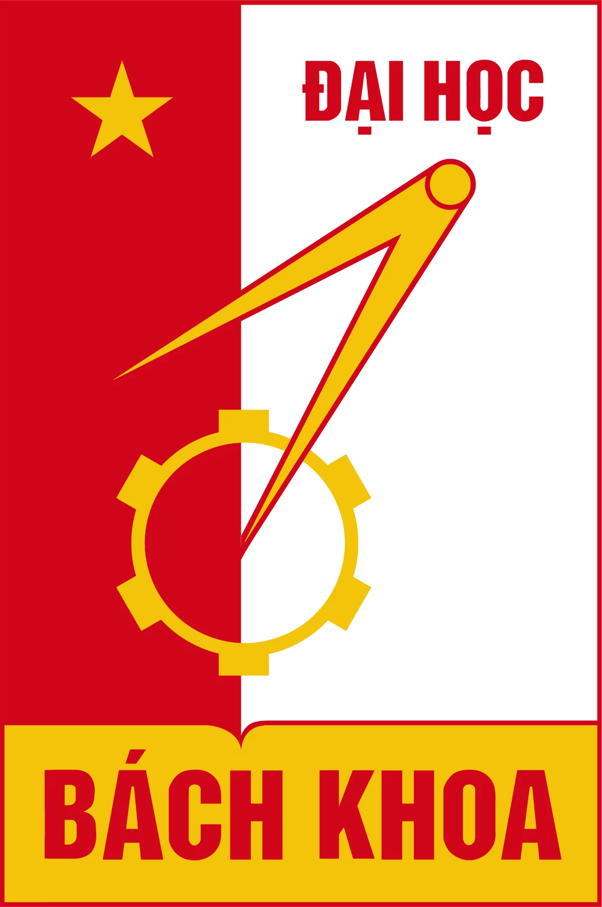

🤖 Duc-Cuong VU
[email]
[orcid]
[linkedin]
[google scholar]
[github]
[cv]
✍️ about me
Bachelor and Master of Science in Automation and Control @ HUST.
Robotics Engineer @ VinRobotics.
📣 news
📚 selected publications



📝 Unifying Hierarchical Sliding Mode Control and Control Barrier Function for Tilt Angle Constraint of a Ball-Balancing Robot
Thi Thuy Hang Nguyen, Duc Cuong Vu, Minh Duc Pham, Tung Lam Nguyen, and Thi-Van-Anh Nguyen
IET Cyber-Systems and Robotics, 2025 (SCIE, Q3)
[accepted manuscript]



📝 Time-optimal trajectory generation and observer-based hierarchical sliding mode control for ballbots with system constraints
Duc Cuong Vu, Minh Duc Pham, Thi Thuy Hang Nguyen, Thi Van Anh Nguyen, and Tung Lam Nguyen
International Journal of Robust and Nonlinear Control, 2024 (SCIE, Q1)
💼 work experience

🎓 educations
👣 academic activities
- Nonlinear Dynamics
- IEEE/RSJ IROS 2026
- IEEE Robotics and Automation Letters (RA-L)
- IEEE RO-MAN 2026
🏆 honors & awards
- NTU Research Scholarship — PhD in EEE, Nanyang Technological University (NTU), Singapore
- Master, PhD Scholarship Programme — Vingroup Innovation Foundation (VINIF)
- Best Thesis Defense Award — Hanoi University of Science and Technology